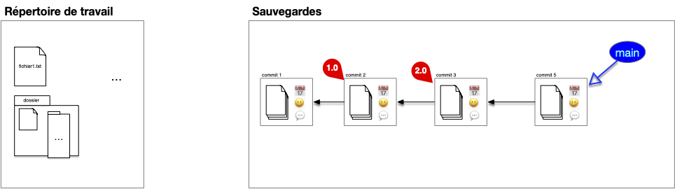
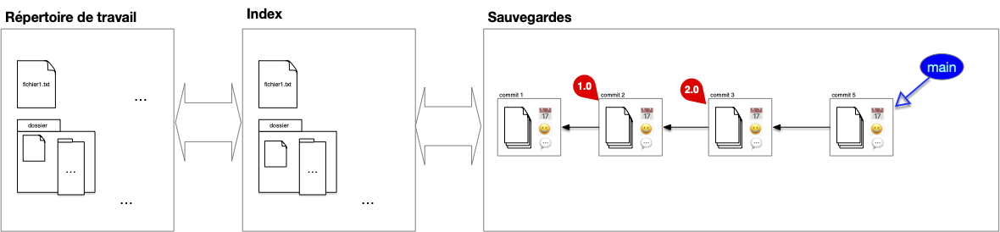
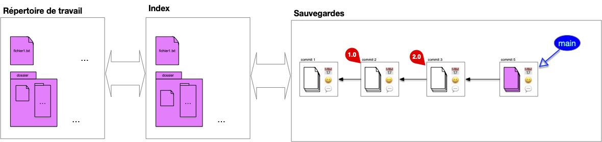
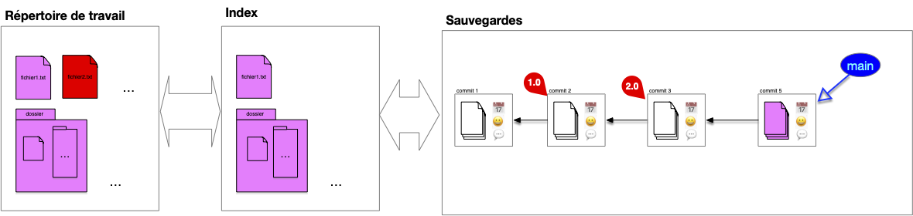
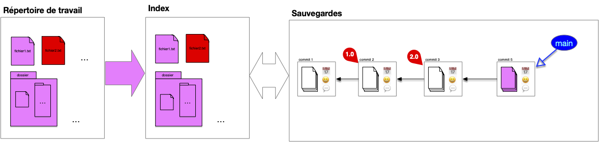
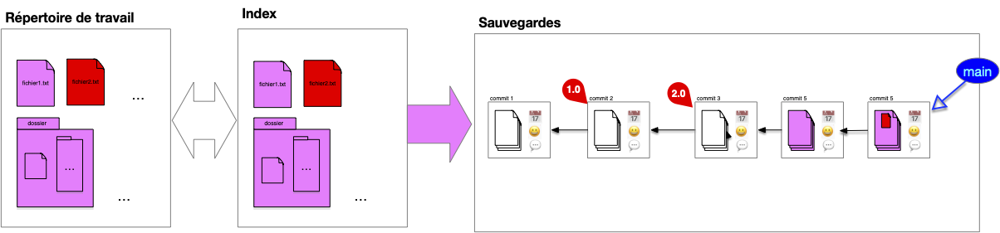
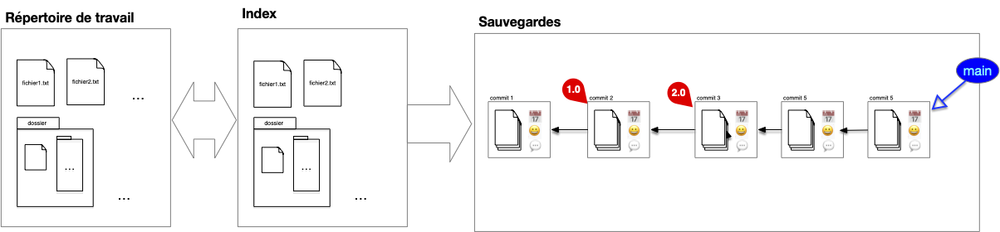
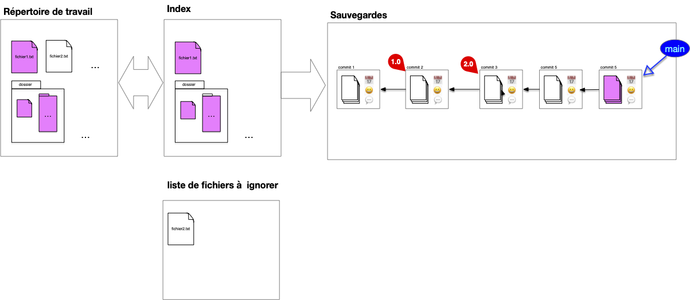

Évolution du code source : index
Les commits d'un projet ajoutent, modifient voir suppriment des fichiers à un projet. Ils montrent l'évolution temporelle du projet et son liées à l'état précédent du projet, appelé état parent, qu'ils modifient.
Définition
Un commit d'un projet est constitué :
- d'une sauvegarde du répertoire de travail (un snapshot du working directory)
- de QUI a effectué cette sauvegarde
- de QUAND a été effectué cette sauvegarde
- du (ou des) commits PARENT(S)
- d'un descriptif des modifications effectuées (QUOI)

Lors d'un commit on a pas forcément envie de :
- tout sauvegarder (par exemple des fichiers de mots de passe ou des fichiers de configurations)
- sauvegarder tout en une fois (de faire plusieurs commits atomiques plutôt qu'un gros commit regroupant plusieurs modification)
Enfin, il peut être difficile de comparer ce qui est sauvé de ce qui est nouveau.
Principe
Pour cela on ajoute un tampon entre la structure de sauvegarde et le répertoire courant appelé l'index.

Pour un projet github l'index correspond aux fichiers présent sur la page du projet
Après un commit, l'index contient l'ensemble des fichiers sauvé dans le commit. Si ces fichiers sont également dans le répertoire de travail, ils seront tous les 3 identiques :

Lorsque l'on ajoute un fichier au projet, l'index et le dossier de travail divergent (l'utilisateur vient de créer fichier2.txt) :

Pour préparer le nouveau commit, l'utilisateur place dans l'index les fichiers modifiés qu'il veut sauvegarder (les autres sont déjà dans l'index), ici il ajoute fichier2.txt :

Remarquez qu'un fichier du dossier n'est toujours pas suivi.
On peut maintenant faire le commit, l'intégralité de l'index est commit (on a un commit de plus dans la chaîne) :

Et on se retrouve à nouveau dans la situation post-commit :

Diff
L'index présente ce que vous allez sauver dans votre sauvegarde. À tout moment, il vous indique donc :
- les différences entre votre sauvegarde actuelle et ce que vous aller ajouter
- les différences et ce que vous aller sauver et votre travail actuel
Définition
On appelle diff les différences entre deux commits, entre le répertoire de travail et l'index ou encore entre deux fichiers.
A savoir :
- les fichiers présent dans un commit et pas dans un autre
- les lignes différentes dans un fichier présent dans les deux commits
Attention cependant, ces diff ne sont que des constructions, ils ne sont pas stocké dans le système.
Fichiers ignorés
Certains fichiers ne doivent pas être suivis. Par exemple :
- les fichiers que produisent votre code comme les fichiers compilés
- les bibliothèques externe que vous ne faite qu'utiliser
- ...
Mais aussi vos propres fichiers qui risquent d'entrer en collision avec ceux des autres utilisateurs comme
- la configuration de votre IDE pour le projet,
- vos fichiers temporaires
- ...
Et surtout les fichiers confidentiels que vous ne voulez surtout pas voir apparaître sur github :
- les mots de passe de votre base de donnée,
- le dossier mac
.DS_Storecontenant tous les fichiers supprimés - ...
Ces fichiers doivent être ajoutés à une liste de fichier à ignorer, sans ça vous devrez toujours faire attention lorsque vous regarderez les différences entre l'index et le répertoire de travail.
Par exemple, si le fichier3.txt n'est jamais à sauver, une fois ajoutée à la liste des fichiers à ignorer il n'apparaîtra pas comme une différence (mais on pourra toujours à tout moment l'ajouter) :

À retenir
La liste des fichier à ignorer est très pratique en code pour ignorer les environnements virtuels, les fichiers de configurations de l'IDE, les fichiers compilés, les bibliothèques partagées. Bref tout ce qui n'est pas stricto sensu utile au code du projet.